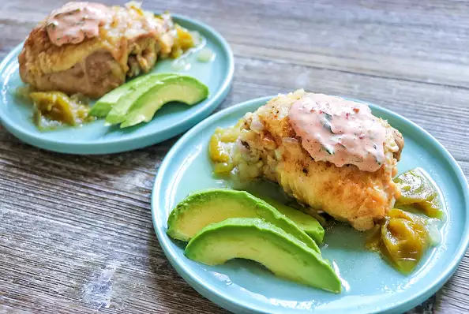

Instant Pot® Braised Chicken Thighs and Tomatillos

Ingredients
8 (4 ounce) skin-on chicken thighs
2 teaspoons ground cumin
1 teaspoon sea salt
1 teaspoon black pepper
1 tablespoon avocado oil
1 large yellow onion, chopped
3 cloves garlic, minced
2 cups chicken stock, divided
6 medium tomatillos, husked and quartered
1 medium jalapeno pepper, seeded and chopped
½ cup chipotle mayonnaise
¼ cup chopped cilantro
1 medium lime, zested and juiced
1 large avocado, sliced
Preparation
Step 1
Lay chicken thighs out on a cutting board and season with cumin, salt, and pepper.
Step 2
Turn on a multi-functional pressure cooker (such as Instant Pot®) and select the Saute-High function. When display reads "hot" add oil. Saute chicken thighs until browned, 3 to 4 minutes per side. Transfer chicken to a plate.
Step 3
Add onion and garlic to the pot and saute for 1 to 2 minutes. Add 1/2 of the chicken stock and scrape the bottom of the pot with a wooden spoon to remove any browned bits. Cancel Saute function.
Step 4
Add tomatillos, jalapeno, and remaining chicken stock to the pot. Place chicken back on top. Close and lock the lid. Select high pressure according to manufacturer's instructions; set timer for 10 minutes. Allow 10 to 15 minutes for pressure to build.
Step 5
While the chicken is cooking, mix mayonnaise, cilantro, lime zest, and lime juice together in a small bowl.
Step 6
Release pressure carefully using the quick-release method according to manufacturer's instructions, about 5 minutes. Unlock and remove the lid.
Step 7
Remove chicken from the pot and place on serving plates. Top each serving with onion-tomatillo mixture, a spoonful of mayonnaise mix, and sliced avocado.